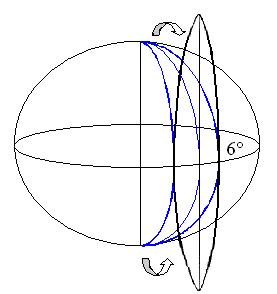
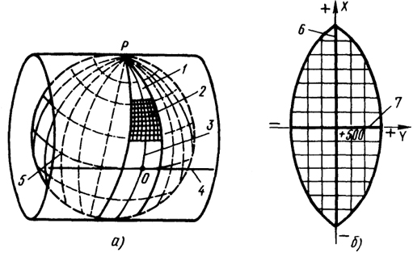

Проекция Гаусса-Крюгера
Известна также как Поперечная проекция Меркатора, эта проекция подобна проекции Меркатора, но в данном случае цилиндр разворачивается не вокруг экватора, а вокруг одного из меридианов. Результатом является равноугольная проекция, которая не сохраняет правильные направления. Центральный меридиан находится в регионе, который может быть выбран. По центральному меридиану искажения всех свойств объектов региона – минимальные. Эта проекция наиболее подходит для картографирования территорий, протяженных с севера на юг. Система координат Гаусса-Крюгера основывается на проекции Гаусса-Крюгера.
Поперечная цилиндрическая проекция с центральным меридианом, расположенным в конкретном регионе. В системе координат Гаусса-Крюгера поверхность Земли разделена на 60 зон шириной шесть градусов, и центральный меридиан первой зоны – 177° ЗД. Проецирование осуществляется в каждой зоне отдельно на цилиндр, ось которого поворачивается в плоскости экватора на 6 градусов от зоны к зоне. Коэффициент масштаба равен 1,000, а не 0,9996, в отличие от UTM. В некоторых странах к 500 000-метровому сдвигу по Y прибавляется число, которое равно номеру зоны. Зона 5 системы координат Гаусса-Крюгера может иметь значения сдвига по оси X – 500 000 метров или 5 500 000 метров.
Линии контакта Любой меридиан для касательной проекции. (Гаусса-Крюгера). Две линии на одинаковом расстоянии от центрального меридиана для секущей проекции (Поперечной проекции Меркатора).
Линейные элементы картографической сетки Экватор и центральный меридиан зоны.
Свойства:
- Shape - Равноугольная. Сохраняются малые формы. Искажение формы больших территорий увеличивается при удалении от центрального меридиана.
- Область - Искажение возрастает по мере удаления от центрального меридиана.
- Направление - Локальные углы точны везде.
- Расстояние - Точный масштаб вдоль центрального меридиана, если масштабный коэффициент равен 1,0. Если он меньше 1,0, то точный масштаб сохраняется на прямых линиях, расположенных на равных расстояниях по обе стороны от центрального меридиана.
- Ограничения - Объекты сфероида или эллипсоида не могут быть спроецированы за пределы 90° от центрального меридиана. Фактически протяженность сфероида или эллипсоида должна быть в пределах 10-12 градусов по обе стороны от центрального меридиана. За пределами этого диапазона, спроецированные данные могут не проецироваться в ту же самую позицию при обратной операции. Для данных на сфере этих ограничений не существует.
- Области использования - Система координат Гаусса-Крюгера. Топографическое картографирование в СССР и России в масштабах от 1:10 000 до 1:500 000 всей поверхности Земли.
В этой системе Земной шар делится на зоны шириной по шесть градусов. Коэффициент масштаба равен 1, сдвиг по оси X равен 500 000 метров и южное полушарие также имеет сдвиг по оси Y – 10000000 метров. Центральный меридиан зоны 1 – 177° ЗД. В некоторых странах добавляют номер зоны в величину сдвига на восток 500 000 метров. В пятой зоне в ГК сдвиг по оси Х равен 500000 или 5500000 метров. Также существуют 3-х градусные зоны Гаусса-Крюгера, используемые для съемок в масштабе 1:5 000 и крупнее. Система UTM подобна системе Гаусса-Крюгера. Коэффициент масштаба равен 0,9996 и центральный меридиан первой UTM-зоны – 177 градусов ЗД. Сдвиг по оси X равен 500 000 метров и южное полушарие также имеет сдвиг по оси Y – 10000000 метров.
Для каждого листа масштаба 1:1 000 000 используется разграфка и определяется номенклатура.
Расчет координат производится по формулам:
где